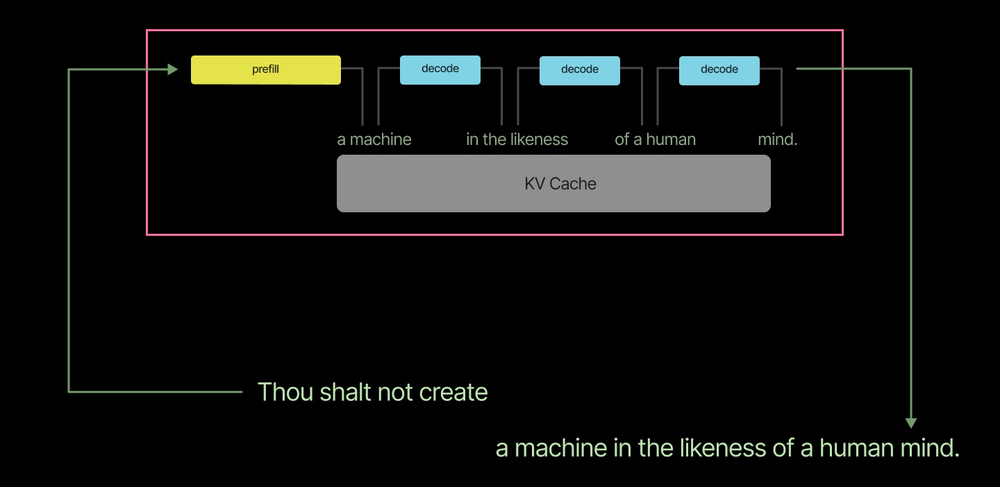
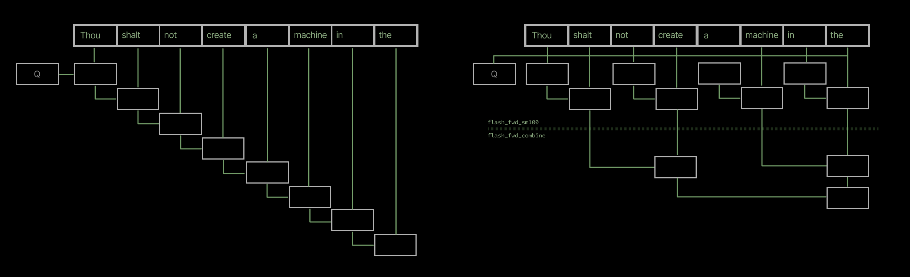
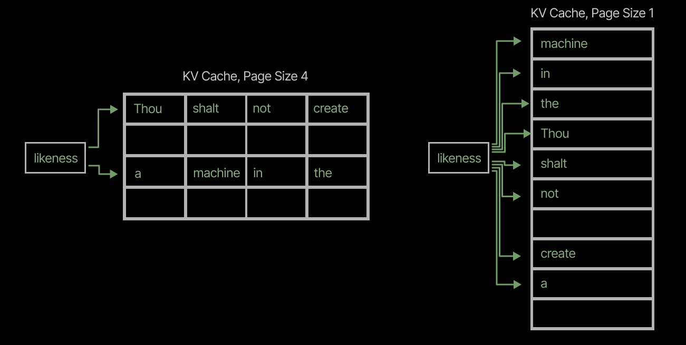
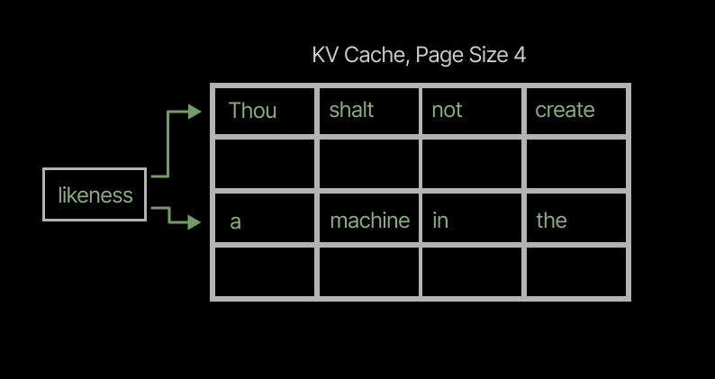
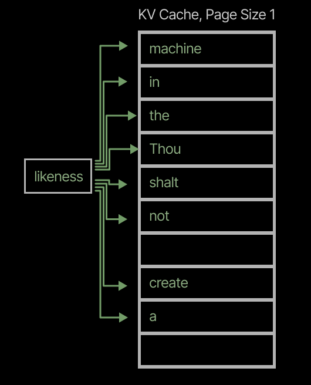
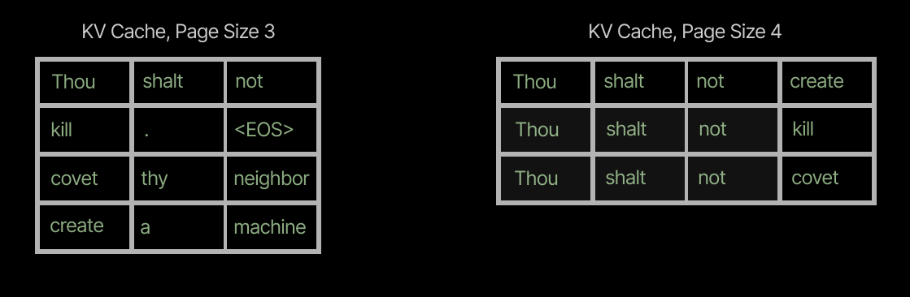
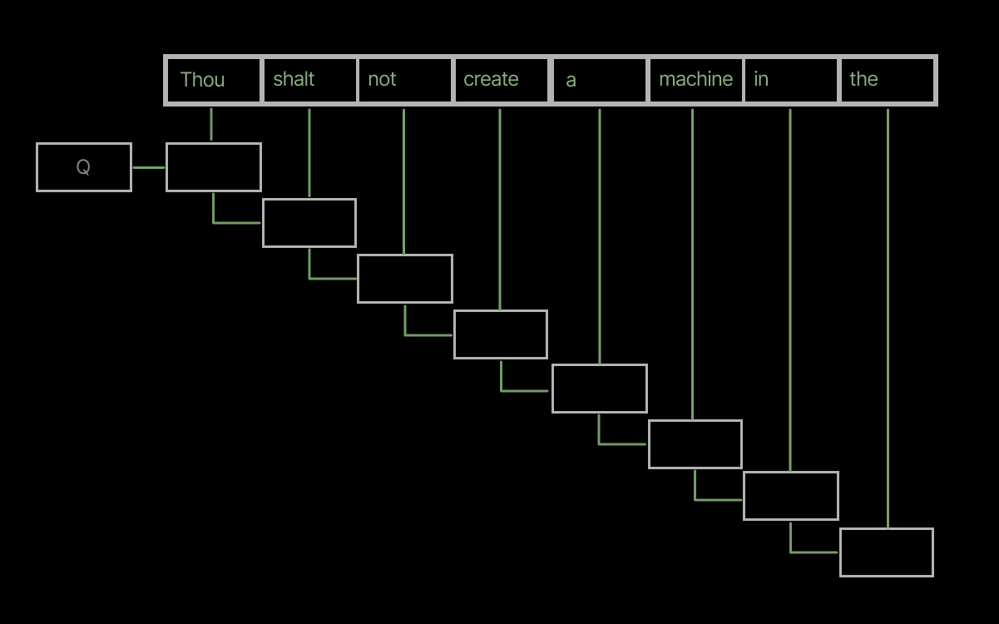
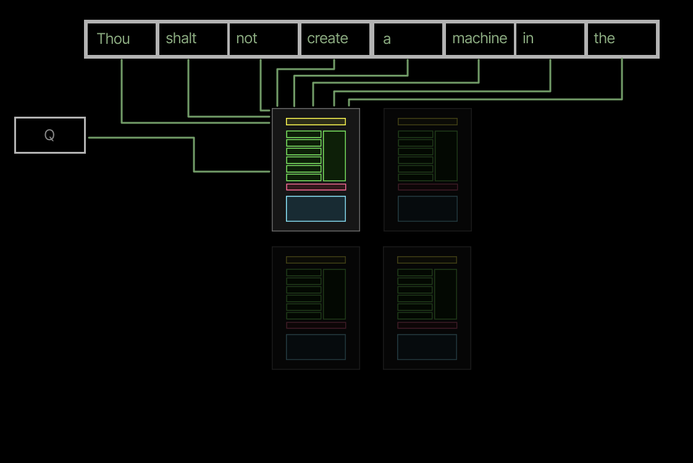
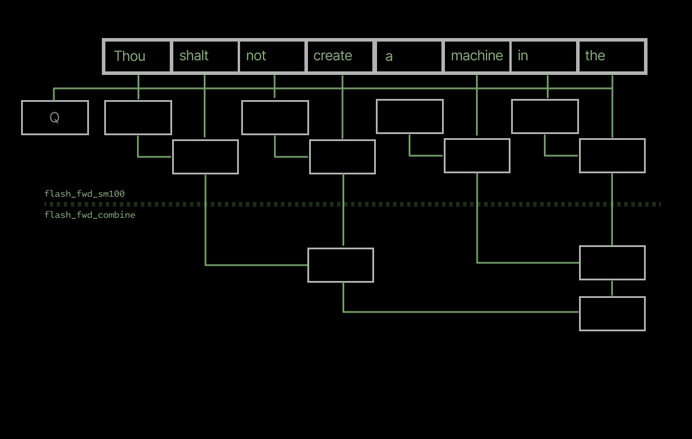
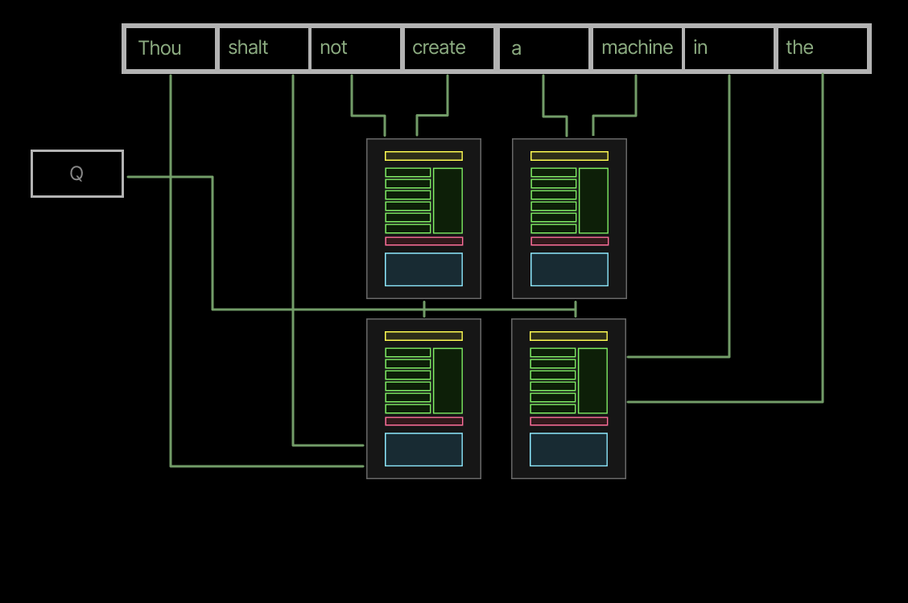

When the FlashAttention-4 kernel source was released last year, we dove
in and shared our findings about how
the kernel works in excruciating exquisite detail. You
can now confirm the high-level structure we inferred by reading
this post
straight from the horse’s mouth.
In the intervening months, we’ve made a number of contributions to this kernel to make it more suitable for large language model inference and in particular for decode-heavy workloads. Unlike pre-training workloads, LLM inference workloads are often dominated by the memory bandwidth-limited “decode” or “token generation” phase (light blue, below).

Inference workloads are also generally more variable — batch sizes and sequence lengths become non-uniform; keys and values must be retrieved from cache (most of the time).
This requires new kernel code, and that code must be fast: “performance is the product”.
Before we dive into the details, some takeaways for a more general audience.
High-level takeaways about low-level programming
Our changes to extend the kernel to the inference workloads we wanted to run can be lumped into two rough categories:
- adjusting the parallelism strategy, i.e. the number of query tiles per thread block and switching from query parallelism to key/value parallelism, and
- supporting irregular global memory accesses, i.e.
cp.asyncloads to replacecp.async.bulkloads using the Tensor Memory Accelerator (TMA).
These two categories are represented by the following figures, which are explained in detail below.


Adjusting parallelism strategies gives the largest leverage in improving performance on modern massively parallel hardware. Intuitively: if you are locked into a specific approach to parallelism, the sequential term in Amdahl’s Law is fixed. If you can change parallelism strategies, you can move work between the parallel and sequential components of your algorithm. This is, per the Law, generally higher leverage than increasing the speed of a fixed parallel component.
We didn’t choose the CUDA Templates Domain Specific Language (CuTe DSL), the original kernel authors did, but it worked well for us. It supports highly productive development loops through fast JIT compilation with minimal or zero run-time cost. It also made expressing many of our ideas more straightforward than older tools. Note that because it uses templates, FA4 is really a family of kernels, if “kernel” means roughly “something that can be launched into a CUDA stream”. We’ll keep calling it a “kernel”
CuTe DSL was nice. But, as we indicated in our previous post, FA4 is
best understood algorithmically at the tile level, not at the warp level at which it is
implemented. It’s clear that proper tile-based programming would be
better for ergonomics and development speed (which, by the way, still matters in the age of
agents). With a tile-based programming model, programmers can more
simply express and operate on tile-level flows. That makes it easier to
change or add algorithms to kernels at lower engineering cost (the first
category of changes). Furthermore, higher-level tile-based models make
it easier for compilers to implement and optimize, say, both
cp.async and TMA load paths (the second category) and
dispatch based on, say, size.
In this light, we’re very much looking forward to improved support for the CUDA Tile programming model, as distinct from the classic “CUDA SIMT” programming model, to build the attention and matmul kernels of the future.
What we did, why, and how we knew it was good
We organize our contributions by pull request. Each section begins with a “Figure of Merit”: the measurement used to indicate that the contribution improved performance. We report these figures in the traditional format of the performance engineer: an ASCII table.
PR 2109 : support FP8 inputs (merged April 17, 2026)
Figure of Merit: Up to 1.16x throughput relative to bf16 baseline
| Batch Size / Seq Len | BF 16 TFLOP/s | FP8 TFLOP/s | Speedup |
| -------------------- | ------------- | ----------- | ------- |
| 1 / 16384 | 1569 | 1818 | 1.13x |
| 32 / 512 | 962 | 1090 | 1.16x |Training models generally requires higher precision floating point numbers to properly accumulate many small changes inside gradients. But at inference time, we can get away with lower precision. Reducing the bit width by a factor of two reduces memory and arithmetic bandwidth demand by a factor of two without nearly as large a hit to model quality.
This is especially true of the MLP/MoE layers of large models, which
often use diminutive, “nibble”-sized 4 bit floating point
numbers. Attention operations, especially on long contexts, involve
more accumulations and so are harder to quantize. Models like gpt-oss
combine single-precision attention
operations with 4 bit matmuls to get the best of both worlds.
However, key model families like DeepSeek-V3 and V4 natively (i.e., from training) support 8 bit attention operations. And other models like the Qwen and Gemma series are sometimes deployed with 8 bit KV caches to accelerate inference.
So
we added support
for 8 bit floats (with either four or five exponent bits, aka e4m3 or e5m2).
Relative to the other changes discussed below, this is pretty unsubtle:
fewer bytes moved and operated on means faster inference! It also means
smaller KV caches, which means longer contexts and/or increased user
concurrency during inference.
Notably, the speedup is less than the 2x you might expect from a 2x reduction in bit width, which cuts demand for both memory bandwidth and (effective) arithmetic bandwidth by two. Determining the specific bottleneck here would require a more detailed analysis. But the result is in line with a bottleneck in the softmax operation, which still operates at the same precision (on CUDA Cores and/or Special Function Units) even as the Tensor Cores operate on lower-precision inputs.
PR 1999 and PR 2104 : support arbitrary KV page sizes (merged November 13, 2025) and optimize performance (merged January 15, 2026)
Figure of Merit: Up to 2.40x throughput for small page sizes
| Page Size | Added in PR 1999? | TFLOP/s, PR 1999 | TFLOP/s, PR 2104 | Speedup |
| --------- | ----------------- | ---------------- | ---------------- | ------- |
| 1 | y | 18.56 | 44.57 | 2.40x |
| 8 | y | 31.21 | 42.58 | 1.37x |
| 32 | y | 34.98 | 42.47 | 1.21x |
| 128 | n | 42.11 | 41.96 | - |FlashAttention-4 operates on tiles sized to make effective use of the Blackwell Tensor Cores. During the decode phase of inference, the tiles for the key and value tensors are constructed out of entries in the KV cache, populated during prefill. In the original version of FlashAttention-4, the KV cache pages needed to be the same size as the tiles.
This restriction came from the kernel’s use of the Tensor Memory Accelerator
(TMA), a hardware engine for certain regular memory accesses in GPUs
with the Hopper and Blackwell Streaming Multiprocessor (SM)
architecture. The TMA substantially accelerates large affine memory
accesses — those that look like “offset plus stride times shape” for
many strides, as when accessing via a CuTe Layout.
This works nicely for accessing
page-based KV caches
if the page size is large enough.

But the TMA can’t gather multiple scattered blocks into a single tile in a single load, and it doesn’t speed up (and may slow down) smaller loads, which are a consequence of smaller page sizes.

So we added a path that uses cpasync, CuTe DSL’s wrapper
for PTX cp.async
instructions, via a PagedKVManager.
In the TMA-based version, a single thread out of a warp was responsible for loading a tile — the “producer group” in the producer-consumer model is a single thread.
In the cpasync version, each thread issues a load (with
warps’ loads coalesced by the hardware),
so they calculate their own page and offset
within the page. This is simple but inefficient; more on that later!
We repurposed the otherwise idle warp 15 to handle this extra work — the producer group comprises two warps.
In this first PR, these smaller page sizes had lower arithmetic and memory throughput. But in many inference workloads, KV cache efficiency matters a lot, so this can be a good trade to make.
First, large page sizes can lead to unnecessary duplication. If
several requests share a prefix of, say, 64 tokens, but differ after
that point, an attention kernel with page_size=128 will
require a separate page for each request, since the prefix is shorter
than the page size. An attention kernel with page_size=16
can share four pages across the requests, reducing the storage required
multiplicatively by the number of requests (cf the sharing of the prefix
“Thou shalt not” across three requests in the left-hand-side of the
figure below, vs its three-fold repetition in the KV cache with larger
page_size on the right).

Large page sizes lead to substantial internal fragmentation of the KV
cache. Short sequences still require full pages — in the worst case, a
single token consumes an entire page that could hold KV cache data for
128 tokens. That’s >99% internal fragmentation for that block. This
consumes ~8x the capacity of a page_size=16 KV cache which
would have “only” 93.75% internal fragmentation.
This is especially important for speculative decoding. Speculators create many short (~1-16 token) sequences in the KV cache, and with large page sizes, each of those consumes much more space.
Supporting arbitrary page sizes was already a win for compatibility, but
the first implementation came at a performance cost. For
page_size=1, the most extreme case, memory throughput for
memory-bound cases of the
FA4 kernel was under half the effective memory bandwidth, and
arithmetic throughput for compute-bound cases was
under one third the effective arithmetic bandwidth. We
fixed the performance in
a follow-up PR
.
A similar problem affected the FlashAttention-3 kernel, so we ported
the strategy over to the FA4 PagedKVManager.
The key move was decoupling address generation from address use to reduce redundant computation. This is done by “transposing” address generation, as described below. The approach is also detailed in Section 4.2 in this paper by Zadouri et al .
We organize the 32 threads in each warp as an array with four “row” thread groups with eight “columns” of threads each:
group thread index
------------------------------------------
0 1 2 3 4 5 6 7
warp thread index 0 1 2 3 4 5 6 7
warp thread index 8 9 10 11 12 13 14 15
warp thread index 16 17 18 19 20 21 22 23
warp thread index 24 25 26 27 28 29 30 31Our original approach had each thread compute the pointer for the KV cache row that it was also responsible for loading.
loop k (0..7)
row pointer produced by thread
------------------------------
group 0 4k 4k 4k 4k 4k 4k 4k 4k
group 1 4k+1 4k+1 4k+1 4k+1 4k+1 4k+1 4k+1 4k+1
group 2 4k+2 4k+2 4k+2 4k+2 4k+2 4k+2 4k+2 4k+2
group 3 4k+3 4k+3 4k+3 4k+3 4k+3 4k+3 4k+3 4k+3
row loaded by thread
--------------------
group 0 4k 4k 4k 4k 4k 4k 4k 4k
group 1 4k+1 4k+1 4k+1 4k+1 4k+1 4k+1 4k+1 4k+1
group 2 4k+2 4k+2 4k+2 4k+2 4k+2 4k+2 4k+2 4k+2
group 3 4k+3 4k+3 4k+3 4k+3 4k+3 4k+3 4k+3 4k+3The load pattern here is constrained by the hardware — to get good memory coalescence, threads should access contiguous memory. With row-wise loads, adjacent threads end up redundantly computing the same row pointer.
Unfortunately, this redundancy is costly. Pointers are 64 bits, and int64 operations are expensive (recent data center GPUs have scaled FLOP and matmul FLOP arithmetic bandwidth far more than other op bandwidth). This cost is higher when more addresses need to be calculated, as in smaller page sizes.
The solution is to produce all 32 row pointers ahead of time, then loop over loads. This introduces a cross-thread synchronization in the form of a warp shuffle, but this is cheaper than the address calculation.
The specific pattern we use is a transpose: the eight threads in a “row” group in our warp produce row pointers for 1) different rows that 2) are not logically sequential. Instead, threads in a “column” across groups are responsible for computing (but not using) sequential row pointers.
row pointer produced by thread
------------------------------
group 0 0 4 8 12 16 20 24 28
group 1 1 5 9 13 17 21 25 29
group 2 2 6 10 14 18 22 26 30
group 3 3 7 11 15 19 23 27 31
loop k (0..7)
group 0 loads row 4k using pointer produced by thread k
group 1 loads row 4k+1 using pointer produced by thread k+8
group 2 loads row 4k+2 using pointer produced by thread k+16
group 3 loads row 4k+3 using pointer produced by thread k+24This improved memory throughput over the old method by up to 2.4x
(for page_size=1), achieving the same or greater throughput
than what we observed at larger sizes.
PR 1940 : add parallelism across the KV dimension (merged November 4, 2025)
Figure of Merit: Up to 4.37x greater throughput for small query lengths
| Number of KV splits | Memory throughput (TB/s) |
| ------------------- | ------------------------ |
| 1 (baseline) | 0.83 |
| 2 | 2.65 |
| 4 | 4.30 |
| 8 | 4.27 |
| 16 | 4.22 |
| 32 | 4.37 |
| 64 | 4.17 |
| 128 | 3.83 |Inference performance is generally dominated by decode time. A “typical” inference request spends most of its time producing tokens one or a few at a time based on one or a few queries against many cached KV values.

But the original FlashAttention-4 kernel architecture parallelized work in the query dimension, not the key/value dimension. For small batch size inference, which is critical for high-interactivity, latency-sensitive applications, this is kryptonite. The number of distinct parallelizable instances of the kernel program (cooperative thread arrays) is often much lower than the number of streaming multiprocessors (SMs), leaving as much as 75% of the SMs idle (faded, in the figure below) and 75% of the GPU’s peak performance on the table. Without this change , FlashAttention-4 was generally slower than FlashAttention-2 on B200s!

The solution is
Flash-Decoding
, aka “split KV”, introduced by Tri Dao and collaborators in the
FlashAttention-2 era. We ported split KV to FA4 under the argument
num_splits. In split KV mode, multiple CTAs work
concurrently per query tile, each one computing outputs from a portion
of the sequence, followed by a reduction step at the end to produce the
final result. The extra reduction step is in a separate kernel,
flash_fwd_combine.

Splitting across the KV dimension ensures that there is work for more than one SM, and ideally for all of them.

The out-of-band reduction introduces numerical differences due to floating point non-associativity. Summing within a split, then across them, gives different results from summing across the flat sequence (another L for the monad bros). In our split path, we do the shared memory output tile accumulation in 32 bit floating point to reduce the impact, but it can’t be eliminated.
The extra reduction step and its consequences mean that split KV is
not always a win. So we added a simple heuristic to detect the optimal
number of splits based on SM count and sequence length (triggered via
num_splits = 0).
PR 1993 : reduce wasted work for small query sizes (merged January 8, 2026)
Figure of Merit: Up to 3.06x throughput for single-token decode
| Number of Splits | TFLOP/s | Speedup vs baseline |
| ---------------- | ------- | ------------------- |
| 1 | 1.79 | 1.00x |
| 2 | 3.39 | 1.89x |
| 4 | 5.47 | 3.06x |
| 8 | 5.23 | 2.92x |
| 16 | 5.08 | 2.84x |
| 32 | 5.12 | 2.86x |Query parallelism is not the only choice that reflects the original FlashAttention-4 kernel’s orientation to prefill or training, where there are many query tiles. It was written to operate on two query tiles concurrently, with one dedicated warpgroup of four warps to perform softmax operations for each query tile (eight warps total). Each tile is composed of 128 queries, so this setup assumes at least 256 queries.
But many attention passes during low-latency inference have far fewer than 256 queries in them, even with speculative decoding and grouped-query/multi-query attention (described below). The query tensors are simply padded with zeros to fill out the remainder, which results in wasted work. In particular, if there are fewer than 128 queries, all of the work on the second tile is unnecessary!
So we added another path to the core FA4 kernel that operates on only
a single query tile at a time (q_stage = 1). This
optimization is particularly useful for the short query sequence lengths
seen in decode, e.g. seqlen_q = 1.
Operating on only one query tile per block frees up the second softmax
warpgroup, which normally
runs the softmax operations on the second query tile. We repurposed it
to run additional KV page loads in the non-TMA/cpasync case
we added in
PR 1999
, described above.
PR 2186 : speed up irregular Q::KV head ratios by extending GQA packing (merged March 20, 2026)
Figure of Merit: 2.92x throughput increase for single-token decode
| Pack GQA | TFLOP/s |
| -------- | ------- |
| OFF | 7.1 |
| ON | 20.7 |Decoding doesn’t have to mean running only a single query per sequence. Grouped-query attention (GQA) is an architectural variant that applies multiple query vectors per sequence against each KV vector. Like multi-query attention (MQA), the classic Shazeer jawn on which it builds, GQA increases the arithmetic intensity of inference.
There’s a problem: as we’ve discussed, FA4 breaks down the attention computation by query — and by default, each query in a GQA group is handled separately. That means the KV values need to be loaded redundantly, negating the intended reduction in memory loads.
The solution is, of course, to map the group into a single tile — aka
“GQA packing”, under the flag pack_GQA. This was already
implemented in FA4. But it only worked on certain shapes. Specifically,
because this path used TMA loads, it inherited the TMA’s restrictions on
alignment and layout. The number of query heads per KV head needed to
divide the tile size (128). Some models we wanted to run, like GLM 4.7,
didn’t satisfy this constraint.
The solution was, again, to use cpasync to do normal
loads without the TMA, but this time for query tiles instead of KV
tiles. The same basic transpose/warp shuffle strategy described for PR
2104 above was already implemented for use with Hopper GPUs, so we just
needed to wire the two together.
Coda
At Modal, we are all-in on open source software for inference. We are contributing to kernels like FA4, to inference engines like SGLang, and to training frameworks like SLIME because we believe that our infrastructure is the best place to deploy this software to production as part of an application, whether that’s serving inference or training models.
If you want to contribute to projects like FlashAttention or SGLang — or if you want to build the infrastructure that runs them — we’re hiring .